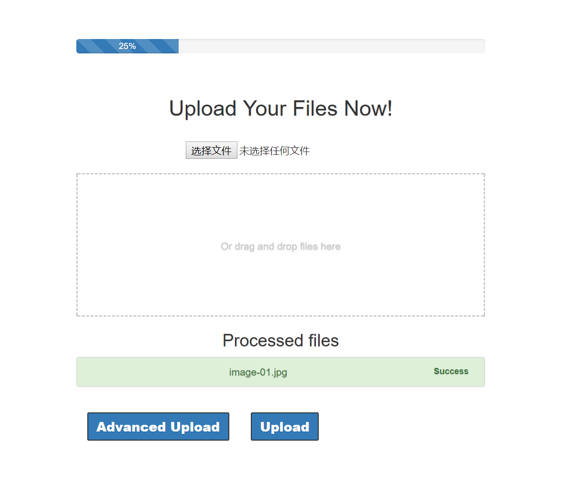
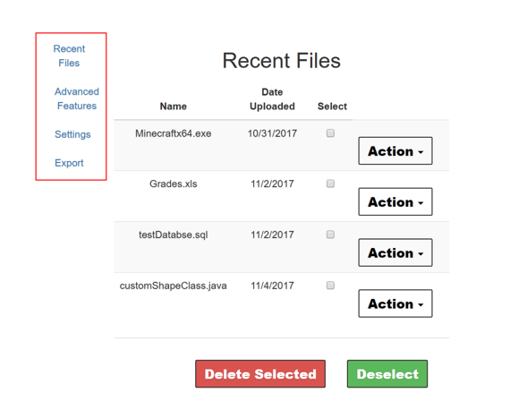
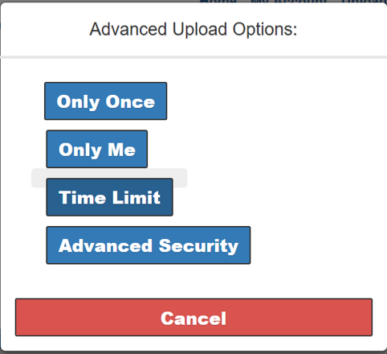

Evaluation for DripDrop
This web application has a user-friendly interface and is very straight forward and easy to use. Good job overall. I will work through 3 tasks used in P5 using for heuristic evaluation in first section and then summarize all problems I found in my second section. I am using Google Chrome Ver. 62.0.3202.89 for this evaluation.
Heuristic Evaluation
Simple and Natural Dialogue / Aesthetics & Min. Design
When I work through the 3 tasks, I think the DripDrop did well in this part. Easy enough to understand and use all the functions provided. One thing need to point that the process bar and processed files section seems redundant in the upload page. And I will discuss it in the problem part.

Speak the User’s Language
It speaks the user’s language but on thing I found may confuse the use is on the my account page,

The buttons in the red rectangle is not clear enough for the function. I know it may be still developing and is not part of test case.
Minimize User Memory Load
DripDrop did well on this part. First it is using the webpage, which means user don’t need to install a software for this, second, it provides the function for delete uploaded file. These two points indicate it is doing well on this point.
Consistency
DripDrop did well on this part. The simple and easy enough user interface make it looks the same on no matter the big or small screens and it is also the same design language for Upload and Download page
Feedback
Since it is a web application, the exit is clear enough, just close the brower. But one thing I come up with is that what if user need to cancel the upload for a big file. Since the function of uploading file is not actually working for now, I cannot judge this part but for what DripDrop have now, it is good.
Shortcuts
So far, I didn’t meet any of the error message. However, I think the error here will main happen in the following situations:
- Fail to upload/Download the file
- Wrong Code to download file
- Wrong user name/password
Prevent Errors
Again, as the Good Error Message section, I didn’t see any error or potential error that can happy in the function that I need to test in this assignment. But for the download file function, it is clear missing the confirm file part, which may cause error.
Help and Documentation
I don’t think DripDrop needs a help and documentation since it is easy and obvious enough to use.
Problems
-
(Major) Advanced Upload Time Limit, Calendar is working in Advanced Upload is not working. At least I don’t know if it the date I choose. My suggestion is make the calendar work as well as add a confirm page after selecting the date and time.
-
(Cosmetic) The highlight in Advance Upload is not function well. The highlighted background (Grey in the screenshot) seems weird. My suggestion is remove the background or make it filled over the button area.

-
(Cosmetic) Progress bar looks wired for an unfamiliar user. I guess it is for user to see the process for Upload or have many storage the use used but it doesn’t have any function for now, which is totally fine. My suggestion is add a text somewhere is indicate the usage for this bar.
-
(Minor) After clicking “OK” after showing the “File is ready to be shared” dialog, it nav to the home page, I think a better way is direct to all the files the user shared so user can modify the file(s).
-
(Cosmetic) No re-check for the CODE on the upload page. After the sender upload the file and if he clicks “OK” or “cancel” by accident, the only way he can do is nav back to “My account”, but I think since the processed files area on the screenshot below is empty enough, I think developers can consider to add code somewhere.
-
For the download the file function, it is very clear but I think after enter the code, the website should provide a pre-view for the file (maybe just file name and shared by who) to make sure the user is downloading the file he wants.